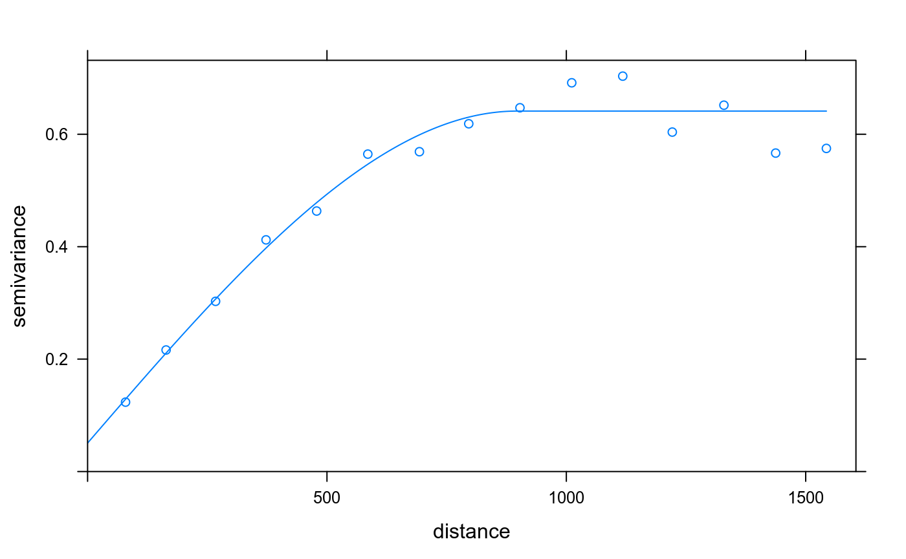

basic.RmdThis R extension package provides features to bundle an R analysis together with the required runtime environment in so called software containers, more specifically Docker. The intention of this package is to provide a building block to support reproducible and archivable research. Development is supported by the DFG-funded project Opening Reproducible Research (http://o2r.info).
The core functionality is to create a Dockerfile from a given R session, script, or workspace directory. This Dockerfile contains all the R packages and their system dependencies required by the R workflow to be packaged.
The Dockerfiles are based on rocker (on Docker Hub). Eventually it should/could be possible to create images from scratch?
Dockerfile generation relies on the sysreqs package.
To build images and run containers, this package integrates with the harbor package.
For nitty gritty things like reading/loading/installing the exact versions, including system dependencies, internal and external libraries etc., this project is focused on the geospatial domain.
Load the package, do your analysis, and create a Dockerfile.
suppressPackageStartupMessages(library("containerit"))
# do stuff, based on demo("krige")
suppressPackageStartupMessages(library("gstat"))
suppressPackageStartupMessages(library("sp"))
data(meuse)
coordinates(meuse) = ~x+y
data(meuse.grid)
gridded(meuse.grid) = ~x+y
v <- variogram(log(zinc)~1, meuse)
m <- fit.variogram(v, vgm(1, "Sph", 300, 1))
plot(v, model = m)
## INFO [2019-07-21 14:21:42] Going online? TRUE ... to retrieve system dependencies (sysreq-api)
## INFO [2019-07-21 14:21:42] Trying to determine system requirements for the package(s) 'assertthat,backports,commonmark,crayon,curl,desc,digest,evaluate,FNN,formatR,fs,futile.logger,futile.options,gstat,htmltools,intervals,knitr,lambda.r,lattice,magrittr,MASS,memoise,pkgdown,R6,Rcpp,rlang,rmarkdown,roxygen2,rprojroot,rstudioapi,semver,sp,spacetime,stevedore,stringi,stringr,xfun,xml2,xts,yaml,zoo' from sysreqs online DB
## INFO [2019-07-21 14:21:44] Adding CRAN packages: assertthat, backports, commonmark, crayon, curl, desc, digest, evaluate, FNN, formatR, fs, futile.logger, futile.options, gstat, htmltools, intervals, knitr, lambda.r, lattice, magrittr, MASS, memoise, pkgdown, R6, Rcpp, rlang, rmarkdown, roxygen2, rprojroot, rstudioapi, semver, sp, spacetime, stevedore, stringi, stringr, xfun, xml2, xts, yaml, zoo
## INFO [2019-07-21 14:21:44] Created Dockerfile-Object based on sessionInfoThe Dockerfile object can be saved to a file or printed out.
FALSE FROM rocker/r-ver:3.6.1
FALSE LABEL maintainer="daniel"
FALSE RUN export DEBIAN_FRONTEND=noninteractive; apt-get -y update \
FALSE && apt-get install -y git-core \
FALSE libcurl4-openssl-dev \
FALSE libssl-dev \
FALSE libxml2-dev \
FALSE make \
FALSE pandoc \
FALSE pandoc-citeproc
FALSE RUN ["install2.r", "assertthat", "backports", "commonmark", "crayon", "curl", "desc", "digest", "evaluate", "FNN", "formatR", "fs", "futile.logger", "futile.options", "gstat", "htmltools", "intervals", "knitr", "lambda.r", "lattice", "magrittr", "MASS", "memoise", "pkgdown", "R6", "Rcpp", "rlang", "rmarkdown", "roxygen2", "rprojroot", "rstudioapi", "semver", "sp", "spacetime", "stevedore", "stringi", "stringr", "xfun", "xml2", "xts", "yaml", "zoo"]
FALSE WORKDIR /payload/
FALSE CMD ["R"]## [1] "sessionInfo"## INFO [2019-07-21 14:21:45] Going online? TRUE ... to retrieve system dependencies (sysreq-api)
## INFO [2019-07-21 14:21:45] Trying to determine system requirements for the package(s) 'assertthat,backports,commonmark,crayon,curl,desc,digest,evaluate,FNN,formatR,fs,futile.logger,futile.options,gstat,htmltools,intervals,knitr,lambda.r,lattice,magrittr,MASS,memoise,pkgdown,R6,Rcpp,rjson,rlang,rmarkdown,roxygen2,rprojroot,rstudioapi,semver,sp,spacetime,stevedore,stringi,stringr,xfun,xml2,xts,yaml,zoo' from sysreqs online DB
## INFO [2019-07-21 14:21:47] Adding CRAN packages: assertthat, backports, commonmark, crayon, curl, desc, digest, evaluate, FNN, formatR, fs, futile.logger, futile.options, gstat, htmltools, intervals, knitr, lambda.r, lattice, magrittr, MASS, memoise, pkgdown, R6, Rcpp, rjson, rlang, rmarkdown, roxygen2, rprojroot, rstudioapi, semver, sp, spacetime, stevedore, stringi, stringr, xfun, xml2, xts, yaml, zoo
## INFO [2019-07-21 14:21:47] Created Dockerfile-Object based on sessionInfo## An object of class "Dockerfile"
## Slot "image":
## An object of class "From"
## Slot "image":
## [1] "rocker/r-ver"
##
## Slot "postfix":
## An object of class "Tag"
## [1] "3.6.1"
##
##
## Slot "maintainer":
## An object of class "Label"
## Slot "data":
## $maintainer
## [1] "daniel"
##
##
## Slot "multi_line":
## [1] FALSE
##
##
## Slot "instructions":
## [[1]]
## An object of class "Run_shell"
## Slot "commands":
## [1] "export DEBIAN_FRONTEND=noninteractive; apt-get -y update"
## [2] "apt-get install -y git-core \\\n\tlibcurl4-openssl-dev \\\n\tlibssl-dev \\\n\tlibxml2-dev \\\n\tmake \\\n\tpandoc \\\n\tpandoc-citeproc"
##
##
## [[2]]
## An object of class "Run"
## Slot "exec":
## [1] "install2.r"
##
## Slot "params":
## [1] "assertthat" "backports" "commonmark" "crayon"
## [5] "curl" "desc" "digest" "evaluate"
## [9] "FNN" "formatR" "fs" "futile.logger"
## [13] "futile.options" "gstat" "htmltools" "intervals"
## [17] "knitr" "lambda.r" "lattice" "magrittr"
## [21] "MASS" "memoise" "pkgdown" "R6"
## [25] "Rcpp" "rjson" "rlang" "rmarkdown"
## [29] "roxygen2" "rprojroot" "rstudioapi" "semver"
## [33] "sp" "spacetime" "stevedore" "stringi"
## [37] "stringr" "xfun" "xml2" "xts"
## [41] "yaml" "zoo"
##
##
## [[3]]
## An object of class "Workdir"
## Slot "path":
## [1] "/payload/"
##
##
##
## Slot "entrypoint":
## NULL
##
## Slot "cmd":
## An object of class "Cmd"
## Slot "exec":
## [1] "R"
##
## Slot "params":
## [1] NA
##
## Slot "form":
## [1] "exec"This example uses the rgdal package because it has system library dependencies, namely GDAL and PROJ. Code snippets are taken from the sp gallery. Here is some regular R code loading a file and plotting it.
library("rgdal")
library("maptools")
nc <- readOGR(system.file("shapes/", package = "maptools"), "sids", verbose = FALSE)
proj4string(nc) <- CRS("+proj=longlat +datum=NAD27")
plot(nc)The code is not executed but dynamically saved to a temporary file, which is then used to create a Dockerfile.
scriptFile <- tempfile(pattern = "containerit_", fileext = ".R")
writeLines(text = c('library("sp")',
'library("rgdal")',
'nc <- readOGR(system.file("shapes/", package="maptools"), "sids", verbose = FALSE)',
'proj4string(nc) <- CRS("+proj=longlat +datum=NAD27")',
'plot(nc)'),
con = scriptFile)
print(
containerit::dockerfile(from = scriptFile)
)## INFO [2019-07-21 14:21:48] Processing R script file '.' locally.
## INFO [2019-07-21 14:21:48] Creating an R session with the following expressions:
## source(file = "/tmp/Rtmp3VikRz/containerit_5ec85b3262a.R", echo = TRUE)
## INFO [2019-07-21 14:21:50] Going online? TRUE ... to retrieve system dependencies (sysreq-api)
## INFO [2019-07-21 14:21:50] Trying to determine system requirements for the package(s) 'assertthat,backports,crayon,curl,desc,formatR,futile.logger,futile.options,lambda.r,lattice,magrittr,R6,Rcpp,rgdal,rprojroot,rstudioapi,semver,sp,stevedore,stringi,stringr' from sysreqs online DB
## INFO [2019-07-21 14:21:51] Adding CRAN packages: assertthat, backports, crayon, curl, desc, formatR, futile.logger, futile.options, lambda.r, lattice, magrittr, R6, Rcpp, rgdal, rprojroot, rstudioapi, semver, sp, stevedore, stringi, stringr## Warning in dockerfileFromFile(file = from, dockerfile = the_dockerfile, :
## All paths in copy are NULL or NA, not adding any COPY instructions: NA## INFO [2019-07-21 14:21:51] Created Dockerfile-Object based on /tmp/Rtmp3VikRz/containerit_5ec85b3262a.R
## FROM rocker/r-ver:3.6.1
## LABEL maintainer="daniel"
## RUN export DEBIAN_FRONTEND=noninteractive; apt-get -y update \
## && apt-get install -y gdal-bin \
## libcurl4-openssl-dev \
## libgdal-dev \
## libproj-dev \
## libssl-dev
## RUN ["install2.r", "assertthat", "backports", "crayon", "curl", "desc", "formatR", "futile.logger", "futile.options", "lambda.r", "lattice", "magrittr", "R6", "Rcpp", "rgdal", "rprojroot", "rstudioapi", "semver", "sp", "stevedore", "stringi", "stringr"]
## WORKDIR /payload/
## CMD ["R"]This examples packages a workspace directory.
## [1] "cli" "containerit_config.json"
## [3] "demo_sf.html" "demo_sf.Rmd"
## [5] "demo.html" "demo.Rmd"
## [7] "docker" "label-schema_1.0.0-rc.1.txt"
## [9] "logo.png" "logo.svg"
## [11] "rstudio" "scripts"
## [13] "simple_test_script_resources"containerit looks for files in a directory that can be executed and creates a Dockerfile based on the first document found, in this case an R Markdown document.
## Warning in dockerfileFromWorkspace(path = from, dockerfile = the_dockerfile, : Found both scripts and weaved documents (Rmd) in the given directory. Using the first document for packaging:
## ../inst/demo_sf.Rmd## INFO [2019-07-21 14:21:52] Found file for packaging in workspace: ../inst/demo_sf.Rmd
## INFO [2019-07-21 14:21:52] Processing Rmd file '_sf.Rmd' locally using rmarkdown::render(...)
## INFO [2019-07-21 14:21:52] Creating an R session with the following expressions:
## rmarkdown::render("/home/daniel/git/o2r/containerit/inst/demo_sf.Rmd")
## INFO [2019-07-21 14:21:54] Going online? TRUE ... to retrieve system dependencies (sysreq-api)
## INFO [2019-07-21 14:21:54] Trying to determine system requirements for the package(s) 'assertthat,backports,class,classInt,crayon,curl,DBI,desc,digest,e1071,evaluate,formatR,futile.logger,futile.options,htmltools,KernSmooth,knitr,lambda.r,magrittr,R6,Rcpp,rmarkdown,rprojroot,rstudioapi,semver,sf,stevedore,stringi,stringr,units,xfun,yaml' from sysreqs online DB
## INFO [2019-07-21 14:21:56] Adding CRAN packages: assertthat, backports, class, classInt, crayon, curl, DBI, desc, digest, e1071, evaluate, formatR, futile.logger, futile.options, htmltools, KernSmooth, knitr, lambda.r, magrittr, R6, Rcpp, rmarkdown, rprojroot, rstudioapi, semver, sf, stevedore, stringi, stringr, units, xfun, yaml## Warning in dockerfileFromFile(target_file, dockerfile = dockerfile, soft =
## soft, : All paths in copy are NULL or NA, not adding any COPY instructions:
## NA## INFO [2019-07-21 14:21:56] Created Dockerfile-Object based on ../inst## FROM rocker/r-ver:3.6.1
## LABEL maintainer="daniel"
## RUN export DEBIAN_FRONTEND=noninteractive; apt-get -y update \
## && apt-get install -y gdal-bin \
## git-core \
## libcurl4-openssl-dev \
## libgdal-dev \
## libgeos-dev \
## libgeos++-dev \
## libssl-dev \
## libudunits2-dev \
## pandoc \
## pandoc-citeproc
## RUN ["install2.r", "assertthat", "backports", "class", "classInt", "crayon", "curl", "DBI", "desc", "digest", "e1071", "evaluate", "formatR", "futile.logger", "futile.options", "htmltools", "KernSmooth", "knitr", "lambda.r", "magrittr", "R6", "Rcpp", "rmarkdown", "rprojroot", "rstudioapi", "semver", "sf", "stevedore", "stringi", "stringr", "units", "xfun", "yaml"]
## WORKDIR /payload/
## CMD ["R"]Dockerfile
You can skip available packages and choose your own base image.
df <- containerit::dockerfile(from = "../inst", image = "rocker/geospatial:3.5.2", filter_baseimage_pkgs = TRUE)## Warning in dockerfileFromWorkspace(path = from, dockerfile = the_dockerfile, : Found both scripts and weaved documents (Rmd) in the given directory. Using the first document for packaging:
## ../inst/demo_sf.Rmd## INFO [2019-07-21 14:21:58] Found file for packaging in workspace: ../inst/demo_sf.Rmd
## INFO [2019-07-21 14:21:58] Processing Rmd file '_sf.Rmd' locally using rmarkdown::render(...)
## INFO [2019-07-21 14:21:58] Creating an R session with the following expressions:
## rmarkdown::render("/home/daniel/git/o2r/containerit/inst/demo_sf.Rmd")
## INFO [2019-07-21 14:22:02] Skipping packages for image rocker/geospatial:3.5.2 (packages are unversioned): assertthat, backports, class, classInt, crayon, curl, DBI, desc, digest, e1071, evaluate, formatR, htmltools, KernSmooth, knitr, magrittr, R6, Rcpp, rmarkdown, rprojroot, rstudioapi, sf, stringi, stringr, units, xfun, yaml
## INFO [2019-07-21 14:22:02] Going online? TRUE ... to retrieve system dependencies (sysreq-api)
## INFO [2019-07-21 14:22:02] Trying to determine system requirements for the package(s) 'futile.logger,futile.options,lambda.r,semver,stevedore' from sysreqs online DB
## INFO [2019-07-21 14:22:03] Adding CRAN packages: futile.logger, futile.options, lambda.r, semver, stevedore## Warning in dockerfileFromFile(target_file, dockerfile = dockerfile, soft =
## soft, : All paths in copy are NULL or NA, not adding any COPY instructions:
## NA## INFO [2019-07-21 14:22:03] Created Dockerfile-Object based on ../inst## FROM rocker/geospatial:3.5.2
## LABEL maintainer="daniel"
## # CRAN packages skipped because they are in the base image: assertthat, backports, class, classInt, crayon, curl, DBI, desc, digest, e1071, evaluate, formatR, htmltools, KernSmooth, knitr, magrittr, R6, Rcpp, rmarkdown, rprojroot, rstudioapi, sf, stringi, stringr, units, xfun, yaml
## RUN ["install2.r", "futile.logger", "futile.options", "lambda.r", "semver", "stevedore"]
## WORKDIR /payload/
## CMD ["R"]For extended configuration options see the vignettes online at https://o2r.info/containerit/articles/.